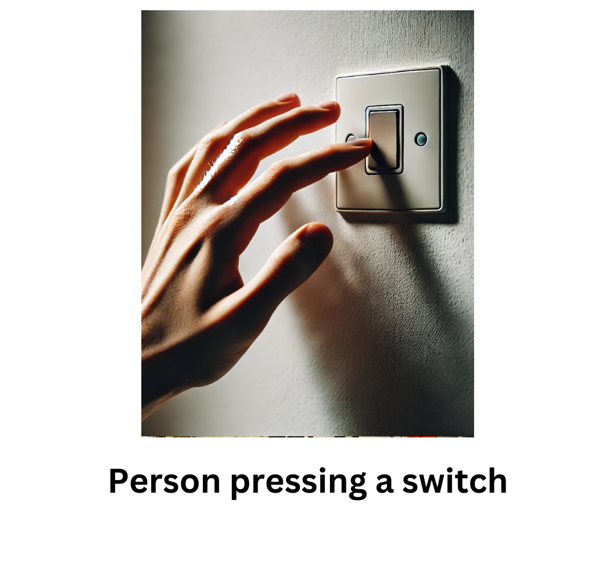
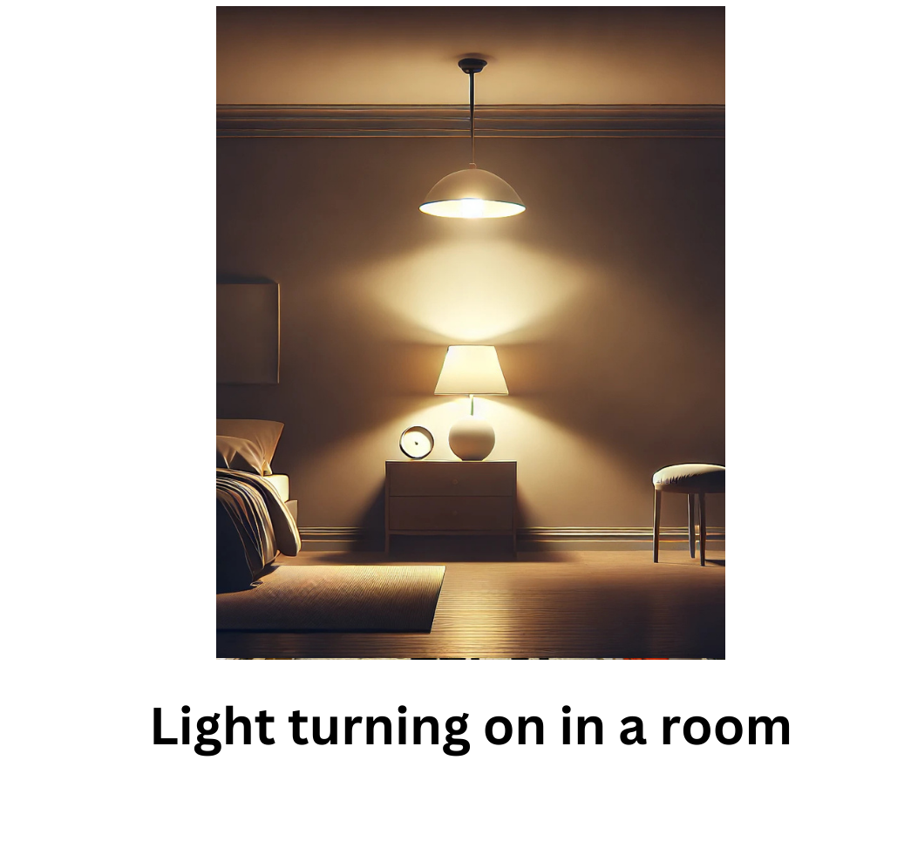
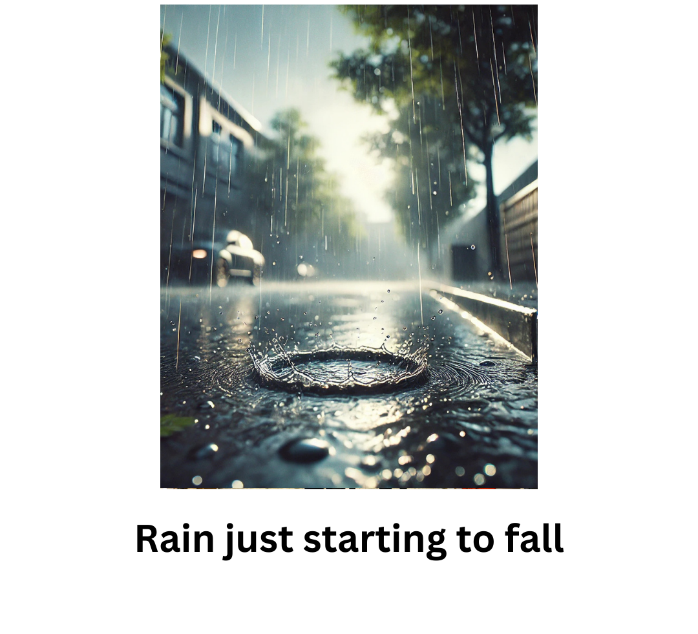

<!DOCTYPE html>
<html>
  <head>
    <style>
      /* Optional: Hide cursor if needed */
      .hide_cursor {
        cursor: none;
      }
    </style>
    <title>My Experiment</title>
    <!-- Include jsPsych library and plugins -->
    <script src="jspsych/plugins/jspsych.js"></script>
    <script src="jspsych/plugins/plugin-instructions.js"></script>
    <script src="jspsych/plugins/plugin-html-button-response.js"></script>
    <script src="jspsych/plugins/plugin-preload.js"></script>
    <link rel="stylesheet" href="jspsych/css/jspsych.css">
  </head>
  <body></body>
  <script>
    // Define data folder for saving results
    var data_folder = 'data/';

    // Function to save data via POST request
    function saveData(name, data) {
      var xhr = new XMLHttpRequest();
      xhr.open('POST', 'write_data.php'); // PHP file to handle data writing
      xhr.setRequestHeader('Content-Type', 'application/json');
      xhr.send(JSON.stringify({ filedata: data }));
    }

    // Initialize jsPsych
    var jsPsych = initJsPsych({
      on_finish: function () {
        saveData(data_folder + 'all_data_sub_' + subject_id + '.csv', jsPsych.data.get().csv());
      }
    });

    // Generate a random subject ID
    var subject_id = jsPsych.randomization.randomID(15);

    // Initialize experiment timeline
    var timeline = [];

    // Preload images
    var preload = {
      type: jsPsychPreload,
      images: [
        'images/instructions/1.png',
        'images/instructions/2.png',
        'images/instructions/3.png',
        'images/instructions/4.png',
        'images/instructions/5.png',
        'images/instructions/6.png',
        'images/instructions/7.png',
        'images/instructions/8.png',
        'images/causal/package_causal/package_causal_1.png',
        'images/causal/package_causal/package_causal_2.png',
        'images/causal/package_causal/package_causal_3.png',
        'images/causal/package_causal/package_causal_4.png',
        'images/causal/package_causal/package_causal_5.png',
        'images/causal/package_causal/package_causal_6.png',
        'images/causal/package_causal/package_causal_7.png',
        'images/causal/package_causal/package_causal_8.png',
        'images/causal/package_causal/package_causal_9.png',
        'images/causal/package_causal/package_causal_10.png',
        'images/causal/museum_causal/museum_causal_1.png',
        'images/causal/museum_causal/museum_causal_2.png',
        'images/causal/museum_causal/museum_causal_3.png',
        'images/causal/museum_causal/museum_causal_4.png',
        'images/causal/museum_causal/museum_causal_5.png',
        'images/causal/museum_causal/museum_causal_6.png',
        'images/causal/museum_causal/museum_causal_7.png',
        'images/causal/museum_causal/museum_causal_8.png',
        'images/causal/museum_causal/museum_causal_9.png',
        'images/causal/museum_causal/museum_causal_10.png',
        'images/causal/the_performance_causal/the_performance_causal_1.png',
        'images/causal/the_performance_causal/the_performance_causal_2.png',
        'images/causal/the_performance_causal/the_performance_causal_3.png',
        'images/causal/the_performance_causal/the_performance_causal_4.png',
        'images/causal/the_performance_causal/the_performance_causal_5.png',
        'images/causal/the_performance_causal/the_performance_causal_6.png',
        'images/causal/the_performance_causal/the_performance_causal_7.png',
        'images/causal/the_performance_causal/the_performance_causal_8.png',
        'images/causal/the_performance_causal/the_performance_causal_9.png',
        'images/causal/the_performance_causal/the_performance_causal_10.png',
        'images/causal/coin_causal/coin_causal_1.png',
        'images/causal/coin_causal/coin_causal_2.png',
        'images/causal/coin_causal/coin_causal_3.png',
        'images/causal/coin_causal/coin_causal_4.png',
        'images/causal/coin_causal/coin_causal_5.png',
        'images/causal/coin_causal/coin_causal_6.png',
        'images/causal/coin_causal/coin_causal_7.png',
        'images/causal/coin_causal/coin_causal_8.png',
        'images/causal/coin_causal/coin_causal_9.png',
        'images/causal/coin_causal/coin_causal_10.png',
        'images/causal/dog_causal/dog_causal_1.png',
        'images/causal/dog_causal/dog_causal_2.png',
        'images/causal/dog_causal/dog_causal_3.png',
        'images/causal/dog_causal/dog_causal_4.png',
        'images/causal/dog_causal/dog_causal_5.png',
        'images/causal/dog_causal/dog_causal_6.png',
        'images/causal/dog_causal/dog_causal_7.png',
        'images/causal/dog_causal/dog_causal_8.png',
        'images/causal/dog_causal/dog_causal_9.png',
        'images/causal/dog_causal/dog_causal_10.png',
        'images/causal/saving_a_cat_causal/saving_a_cat_causal_1.png',
        'images/causal/saving_a_cat_causal/saving_a_cat_causal_2.png',
        'images/causal/saving_a_cat_causal/saving_a_cat_causal_3.png',
        'images/causal/saving_a_cat_causal/saving_a_cat_causal_4.png',
        'images/causal/saving_a_cat_causal/saving_a_cat_causal_5.png',
        'images/causal/saving_a_cat_causal/saving_a_cat_causal_6.png',
        'images/causal/saving_a_cat_causal/saving_a_cat_causal_7.png',
        'images/causal/saving_a_cat_causal/saving_a_cat_causal_8.png',
        'images/causal/saving_a_cat_causal/saving_a_cat_causal_9.png',
        'images/causal/saving_a_cat_causal/saving_a_cat_causal_10.png',
        'images/causal/dinner_party_scheme/dinner_party_scheme_1.png',
        'images/causal/dinner_party_scheme/dinner_party_scheme_2.png',
        'images/causal/dinner_party_scheme/dinner_party_scheme_3.png',
        'images/causal/dinner_party_scheme/dinner_party_scheme_4.png',
        'images/causal/dinner_party_scheme/dinner_party_scheme_5.png',
        'images/causal/dinner_party_scheme/dinner_party_scheme_6.png',
        'images/causal/dinner_party_scheme/dinner_party_scheme_7.png',
        'images/causal/dinner_party_scheme/dinner_party_scheme_8.png',
        'images/causal/dinner_party_scheme/dinner_party_scheme_9.png',
        'images/causal/dinner_party_scheme/dinner_party_scheme_10.png',
        'images/causal/restaurant_scheme/restaurant_scheme_1.png',
        'images/causal/restaurant_scheme/restaurant_scheme_2.png',
        'images/causal/restaurant_scheme/restaurant_scheme_3.png',
        'images/causal/restaurant_scheme/restaurant_scheme_4.png',
        'images/causal/restaurant_scheme/restaurant_scheme_5.png',
        'images/causal/restaurant_scheme/restaurant_scheme_6.png',
        'images/causal/restaurant_scheme/restaurant_scheme_7.png',
        'images/causal/restaurant_scheme/restaurant_scheme_8.png',
        'images/causal/restaurant_scheme/restaurant_scheme_9.png',
        'images/causal/restaurant_scheme/restaurant_scheme_10.png',
        'images/causal/flight_scheme/flight_scheme_1.png',
        'images/causal/flight_scheme/flight_scheme_2.png',
        'images/causal/flight_scheme/flight_scheme_3.png',
        'images/causal/flight_scheme/flight_scheme_4.png',
        'images/causal/flight_scheme/flight_scheme_5.png',
        'images/causal/flight_scheme/flight_scheme_6.png',
        'images/causal/flight_scheme/flight_scheme_7.png',
        'images/causal/flight_scheme/flight_scheme_8.png',
        'images/causal/flight_scheme/flight_scheme_9.png',
        'images/causal/flight_scheme/flight_scheme_10.png',
        'images/causal/housework_semantic/housework_semantic_1.png',
        'images/causal/housework_semantic/housework_semantic_2.png',
        'images/causal/housework_semantic/housework_semantic_3.png',
        'images/causal/housework_semantic/housework_semantic_4.png',
        'images/causal/housework_semantic/housework_semantic_5.png',
        'images/causal/housework_semantic/housework_semantic_6.png',
        'images/causal/housework_semantic/housework_semantic_7.png',
        'images/causal/housework_semantic/housework_semantic_8.png',
        'images/causal/housework_semantic/housework_semantic_9.png',
        'images/causal/housework_semantic/housework_semantic_10.png',
        'images/causal/cat_care_semantic/cat_care_semantic_1.png',
        'images/causal/cat_care_semantic/cat_care_semantic_2.png',
        'images/causal/cat_care_semantic/cat_care_semantic_3.png',
        'images/causal/cat_care_semantic/cat_care_semantic_4.png',
        'images/causal/cat_care_semantic/cat_care_semantic_5.png',
        'images/causal/cat_care_semantic/cat_care_semantic_6.png',
        'images/causal/cat_care_semantic/cat_care_semantic_7.png',
        'images/causal/cat_care_semantic/cat_care_semantic_8.png',
        'images/causal/cat_care_semantic/cat_care_semantic_9.png',
        'images/causal/cat_care_semantic/cat_care_semantic_10.png',
        'images/causal/creative_activities_semantic/using_technology_semantic.png',
        'images/causal/creative_activities_semantic/creative_activities_semantic_2.png',
        'images/causal/creative_activities_semantic/creative_activities_semantic_3.png',
        'images/causal/creative_activities_semantic/creative_activities_semantic_4.png',
        'images/causal/creative_activities_semantic/creative_activities_semantic_5.png',
        'images/causal/creative_activities_semantic/creative_activities_semantic_6.png',
        'images/causal/creative_activities_semantic/creative_activities_semantic_7.png',
        'images/causal/creative_activities_semantic/creative_activities_semantic_8.png',
        'images/causal/creative_activities_semantic/creative_activities_semantic_9.png',
        'images/causal/creative_activities_semantic/creative_activities_semantic_10.png',
        'images/causal/physical_activity_semantic/physical_activity_semantic_1.png',
        'images/causal/physical_activity_semantic/physical_activity_semantic_2.png',
        'images/causal/physical_activity_semantic/physical_activity_semantic_3.png',
        'images/causal/physical_activity_semantic/physical_activity_semantic_4.png',
        'images/causal/physical_activity_semantic/physical_activity_semantic_5.png',
        'images/causal/physical_activity_semantic/physical_activity_semantic_6.png',
        'images/causal/physical_activity_semantic/physical_activity_semantic_7.png',
        'images/causal/physical_activity_semantic/physical_activity_semantic_8.png',
        'images/causal/physical_activity_semantic/physical_activity_semantic_9.png',
        'images/causal/physical_activity_semantic/physical_activity_semantic_10.png',
        'images/causal/using_technology_semantic/using_technology_semantic_1.png',
        'images/causal/using_technology_semantic/using_technology_semantic_2.png',
        'images/causal/using_technology_semantic/using_technology_semantic_3.png',
        'images/causal/using_technology_semantic/using_technology_semantic_4.png',
        'images/causal/using_technology_semantic/using_technology_semantic_5.png',
        'images/causal/using_technology_semantic/using_technology_semantic_6.png',
        'images/causal/using_technology_semantic/using_technology_semantic_7.png',
        'images/causal/using_technology_semantic/using_technology_semantic_8.png',
        'images/causal/using_technology_semantic/using_technology_semantic_9.png',
        'images/causal/using_technology_semantic/using_technology_semantic_10.png',
        'images/causal/visiting_cities_semantic/visiting_cities_semantic_1.png',
        'images/causal/visiting_cities_semantic/visiting_cities_semantic_2.png',
        'images/causal/visiting_cities_semantic/visiting_cities_semantic_3.png',
        'images/causal/visiting_cities_semantic/visiting_cities_semantic_4.png',
        'images/causal/visiting_cities_semantic/visiting_cities_semantic_5.png',
        'images/causal/visiting_cities_semantic/visiting_cities_semantic_6.png',
        'images/causal/visiting_cities_semantic/visiting_cities_semantic_7.png',
        'images/causal/visiting_cities_semantic/visiting_cities_semantic_8.png',
        'images/causal/visiting_cities_semantic/visiting_cities_semantic_9.png',
        'images/causal/visiting_cities_semantic/visiting_cities_semantic_10.png',
      ]
    };

    // Add preloading to timeline
    timeline.push(preload);

    // Add instruction phase
  // Add instruction phase
  var instructions = {
      type: jsPsychInstructions,
      pages: [
        '<h2>Welcome to the experiment!</h2>' +
        '<p>In this experiment, you will see pairs of images depicting two events.</p>' +
        '<p>Your task is to determine whether:</p>' +
        '<ul>' +
        '<li><strong>event 1 causes event 2</strong></li>' +
        '<li><strong>event 2 causes event 1</strong></li>' +
        '<li><strong>the events are unrelated</strong></li>' +
        '</ul>' +
        '<p>Before starting the actual experiment, you will go through <strong>three examples</strong> to understand the task.</p>' +
        '<p>Click "Next" to begin the examples.</p>'
      ],
      show_clickable_nav: true
    };

    timeline.push(instructions);

    // Example trial 1
    var example_trial_1 = {
      type: jsPsychHtmlButtonResponse,
      stimulus: `
        <div style="display: flex; justify-content: center; align-items: center;">
          <div style="text-align: center; margin-right: 20px;">
            <p style="font-size: 24px; font-weight: bold;">Event 1<p>
            
          </div>
          <div style="text-align: center; margin-left: 20px;">
            <p style="font-size: 24px; font-weight: bold;">Event 2</p>
            
          </div>
        </div>
        <p style="text-align: center; margin-top: 20px;">Did one event cause the other?</p>`,
      choices: ['event 1 causes event 2', 'event 2 causes event 1', 'events are unrelated'],
      trial_duration: 60000,
      button_html: '<button class="jspsych-btn" disabled>%choice%</button>',
      on_load: function () {
        setTimeout(() => {
          document.querySelectorAll('.jspsych-btn').forEach(button => {
            button.disabled = false;
          });
        }, 5000);
      }
    };

    var feedback_trial_1 = {
      type: jsPsychHtmlButtonResponse,
      stimulus: `
        <div style="display: flex; justify-content: center; align-items: center;">
          <div style="text-align: center; margin-right: 20px;">
            <p style="font-size: 24px; font-weight: bold;">Event 1<p>
            
          </div>
          <div style="text-align: center; margin-left: 20px;">
            <p style="font-size: 24px; font-weight: bold;">Event 2</p>
            
          </div>
        </div>
        <h2>Correct Answer</h2>
        <p>The correct answer is: <strong>event 1 causes event 2</strong>.</p>
        <p>Click "Next" to proceed to the next example.</p>`,
      choices: ['Next']
    };

    timeline.push(example_trial_1);
    timeline.push(feedback_trial_1);

    // Example trial 2
    var example_trial_2 = {
      type: jsPsychHtmlButtonResponse,
      stimulus: `
   <div style="display: flex; justify-content: center; align-items: center;">
          <div style="text-align: center; margin-right: 20px;">
            <p style="font-size: 24px; font-weight: bold;">Event 1<p>
            
          </div>
          <div style="text-align: center; margin-left: 20px;">
            <p style="font-size: 24px; font-weight: bold;">Event 2</p>
            
          </div>
        </div>
        <p style="text-align: center; margin-top: 20px;">Did one event cause the other?</p>`,
      choices: ['event 1 causes event 2', 'event 2 causes event 1', 'events are unrelated'],
      trial_duration: 60000,
      button_html: '<button class="jspsych-btn" disabled>%choice%</button>',
      on_load: function () {
        setTimeout(() => {
          document.querySelectorAll('.jspsych-btn').forEach(button => {
            button.disabled = false;
          });
        }, 5000);
      }
    };

    var feedback_trial_2 = {
      type: jsPsychHtmlButtonResponse,
      stimulus: `
        <div style="display: flex; justify-content: center; align-items: center;">
          <div style="text-align: center; margin-right: 20px;">
            <p style="font-size: 24px; font-weight: bold;">Event 1<p>
            
          </div>
          <div style="text-align: center; margin-left: 20px;">
            <p style="font-size: 24px; font-weight: bold;">Event 2</p>
            
          </div>
        </div>
        <h2>Correct Answer</h2>
        <p>The correct answer is: <strong>event 2 causes event 1</strong>.</p>
        <p>Click "Next" to proceed to the next example.</p>`,
      choices: ['Next']
    };

    timeline.push(example_trial_2);
    timeline.push(feedback_trial_2);

    // Example trial 3
    var example_trial_3 = {
      type: jsPsychHtmlButtonResponse,
      stimulus: `
        <div style="display: flex; justify-content: center; align-items: center;">
          <div style="text-align: center; margin-right: 20px;">
            <p style="font-size: 24px; font-weight: bold;">Event 1<p>
            
          </div>
          <div style="text-align: center; margin-left: 20px;">
            <p style="font-size: 24px; font-weight: bold;">Event 2</p>
            
          </div>
        </div>
        <p style="text-align: center; margin-top: 20px;">Did one event cause the other?</p>`,
      choices: ['event 1 causes event 2', 'event 2 causes event 1', 'events are unrelated'],
      trial_duration: 60000,
      button_html: '<button class="jspsych-btn" disabled>%choice%</button>',
      on_load: function () {
        setTimeout(() => {
          document.querySelectorAll('.jspsych-btn').forEach(button => {
            button.disabled = false;
          });
        }, 5000);
      }
    };

    var feedback_trial_3 = {
      type: jsPsychHtmlButtonResponse,
      stimulus: `
        <div style="display: flex; justify-content: center; align-items: center;">
          <div style="text-align: center; margin-right: 20px;">
            <p style="font-size: 24px; font-weight: bold;">Event 1<p>
            
          </div>
          <div style="text-align: center; margin-left: 20px;">
            <p style="font-size: 24px; font-weight: bold;">Event 2</p>
            
          </div>
        </div>
        <h2>Correct Answer</h2>
        <p>The correct answer is: <strong>events are unrelated</strong>.</p>
        <p>Click "Next" to proceed to the experiment.</p>`,
      choices: ['Next']
    };

    timeline.push(example_trial_3);
    timeline.push(feedback_trial_3);

    // Add transition trial before the experiment starts
    var transition_trial = {
      type: jsPsychHtmlButtonResponse,
      stimulus: `
        <h2>Get Ready!</h2>
        <p>You have completed the examples. The experiment is about to begin.</p>
        <p>Click "Start" to begin the experiment.</p>`,
      choices: ['Start']
    };

    timeline.push(transition_trial);


// Define the list of all stimulus block folder names
const stimulusTypes = [
  'cat_care_semantic',
  'creative_activities_semantic',
  'exploring_nature_semantic',
  'using_technology_semantic',
  'kitchen_operations_semantic',
  'maintaining_a_car_semantic',
  'market_semantic',
  'self_care_activities_semantic',
  'traveling_semantic',
  'restaurant_scheme',
  'interview_scheme',
  'flight_scheme',
  'dinner_party_scheme',
  'hotel_scheme',
  'supermarket_scheme',
  'coin_causal',
  'dog_causal',
  'museum_causal',
  'package_causal',
  'saving_a_cat_causal',
  'the_performance_causal'
];

// Function to generate all possible ordered pairs from 1 to 10, with random direction
function generateRandomizedPairs(start, end) {
  let pairs = [];
  for (let i = start; i <= end; i++) {
    for (let j = i + 1; j <= end; j++) {
      pairs.push(Math.random() > 0.5 ? [i, j] : [j, i]);
    }
  }
  return pairs;
}

// Generate and store all trials
let allTrials = [];

stimulusTypes.forEach(stimulus_type => {
  const pairs = generateRandomizedPairs(1, 10);
  pairs.forEach(pair => {
    allTrials.push({
      type: jsPsychHtmlButtonResponse,
      stimulus: `
        <div style="display: flex; justify-content: center; align-items: center;">
          <div style="text-align: center; margin-right: 20px;">
            <p style="font-size: 24px; font-weight: bold;">Event 1</p>
            
          </div>
          <div style="text-align: center; margin-left: 20px;">
            <p style="font-size: 24px; font-weight: bold;">Event 2</p>
            
          </div>
        </div>
        <p style="text-align: center; margin-top: 20px;">Did one event cause the other?</p>`,
      choices: ['event 1 causes event 2', 'event 2 causes event 1', 'events are unrelated'],
      trial_duration: 60000,
      button_html: '<button class="jspsych-btn" disabled>%choice%</button>',
      on_load: function () {
        setTimeout(() => {
          document.querySelectorAll('.jspsych-btn').forEach(button => {
            button.disabled = false;
          });
        }, 5000);
      },
      on_finish: function (data) {
        data.firstImageNumber = pair[0];
        data.secondImageNumber = pair[1];
        data.response_made = typeof data.response !== 'undefined';
        data.stimulus_type = stimulus_type;
      }
    });
  });
});

// Shuffle all trials
let shuffledTrials = jsPsych.randomization.shuffle(allTrials);

// Add the shuffled trials to the timeline
timeline.push(...shuffledTrials);


    // Add final thank-you screen
    var trial_end = {
      type: jsPsychInstructions,
      pages: [
        '<h2>Thank you for participating!</h2>' +
        '<p>You have completed the experiment.</p>' +
        '<p>Your completion code is: <strong>3730E71D97</strong></p>' +
        '<p>Please copy this code and submit it in the platform.</p>'
      ],
      show_clickable_nav: true
    };

    timeline.push(trial_end);

    // Run the experiment
    jsPsych.run(timeline);
  </script>
</html>
